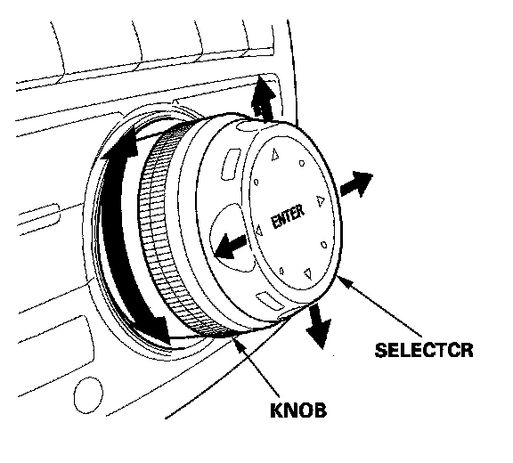

No real-time traffic on the display screen
No real-time traffic on the display screen1. Do a VIN status inquiry, and check if the vehicle has any outstanding product updates for the AcuraLink control unit.
- If there are no outstanding product updates, go to step 2.
- If there are any outstanding product updates, complete them as appropriate.
2. Check if your area has Real-Time Traffic coverage. From an ;'N workstation, go to www.acura.com/ realtimetraffic.
NOTE: At this time, Real-Time Traffic covers many metropolitan areas. Check the website often; more coverage areas are continually being added.
3. Make sure the keyless access remote is linked. When you turn the ignition switch ON (II) with a linked remote, you should see WELCOME DRIVER 1 or WELCOME DRIVER 2 on the multi-information display (MID).
- If you see WELCOME DRIVER 1 or WELCOME DRIVER 2 on the MID, go to step 5.
- If you do not see WELCOME DRIVER 1 or WELCOME DRIVER 2 on the MID, go to step 4.
NOTE: Make sure you are using the same remote (Driver 1 or Driver 2) that your client was using when problems were noticed with Real-Time Traffic. This is because each remote will recall the customized settings and data for that driver, including Real-Time Traffic settings. Ideally, check both remotes to make sure the Real-Time Traffic settings are correct.
4. Link the remote:
- Press and hold the LOCK and UNLOCK buttons on the remote until its LED blinks once.
- Lock and unlock the driver's door once with the remote.
5. Park the vehicle outside where you have a clear view of the southern sky. Turn on the XM radio, and make sure it gets at least channels 000, 001, 174, 247 (XM's preview mode).
- If the XM radio gets at least channels 000, 001, 174, 247 go to step 6.
- If the XM radio does not get at least channels 000, 001, 174, 247 troubleshoot the XM radio, repair as needed, then go to step 6.

6. In the lower left corner of the display screen, make sure the scale is set to 1/2, 1, 2, or 5 miles. (If the scale is not set to one of these values, you cannot see Real-Time Traffic.) To change the scale, turn the knob on the interface dial to the left or the right, as needed.
NOTE: Many AcuraLink functions are selected using the interface dial at the center of the dashboard. The interface dial consists of a gray knob with a silver selector over it. The knob turns left and right; the selector moves right, left, up, down, and in.
7. Check if the display screen shows Real-Time Traffic.
- If you do not see Real-Time Traffic, go to step 8.
- If you see Real-Time Traffic, return the vehicle to your client.
8. Select the map menu, and press in the selector.
NOTE: If you were using the selector to manually scroll the map, the map menu is not available. Press the MAP/GUIDE button instead.
9. Turn the knob to select Show Icon on Map, then press in the selector.
10. From the icon selection bar at the bottom of the display screen, select the Traffic icon. The icon should turn solid blue when you select it.
- If the icon turns solid blue, go to step 13.
- If the icon does not turn solid blue, go to step 11.
11. Turn the knob until the Traffic icon is outlined in blue, then press in the selector.
- If the icon turns solid blue, go to step 13.
- If the icon does not turn solid blue, do the AcuraLink self-diagnostic procedure, then go to step 12.
12. Reset the AcuraLink control unit;
- Make sure you have the anti-theft codes for the audio system and navigation system.
- With the ignition switch turned to LOCK (0), pull the No. 5 (7.5 A) fuse from the driver's under-dash fuse/relay box. Wait 20 seconds, then reinstall the fuse.
- Enter the anti-theft codes for the audio system and navigation system.
13. Select Icon Options by pushing the selector to the right.
14. From the Select category for icon settings: screen, turn the knob to Traffic, then press in the selector.
15. From the Select traffic info: screen, press in the selector to select Traffic Speeds. Turn the knob to Traffic Icons, and press in the selector again. Both Traffic Speeds and Traffic Icons must be solid blue. When both are solid blue, select DONE by pushing the selector to the right.
16. Check if the display screen shows Real-Time Traffic.
- If you do not see Real-Time Traffic, go to step 17.
- If you see Real-Time Traffic, return the vehicle to your client.
17. Check the display screen on another RL with a known-good navigation system, to make sure the XM NavTraffic signal is currently being broadcast. Wait about 5 minutes for the display screen to refresh.
- If you see Real-Time Traffic on the other MDXs display screen, go to step 18.
- If you do not see Real-Time Traffic on the other MDX display screen, call Acura Client Services at 800-382-2238, and ask about any known traffic system outages or blackouts in your area.
18. Make sure your client's XM NavTraffic account status is active. This account must be active to get Real-Time Traffic:
- Call XM at 800-852-9696.
- From the automated menu, select 1 (dealers and retailers), and from the next menu, select 3 (technical support).
- Ask the agent to check the XM NavTraffic account status:
- If the account is active and there are no known outages or blackouts, go to step 20.
- If the account is inactive, get it activated, and ask for a rapid refresh. (A rapid refresh takes about 15 to 30 minutes.). Then go to step 19.
19. Check if the display screen shows Real-Time Traffic.
- If you still do not see Real-Time Traffic, go to step 20.
- If you see Real-Time Traffic, return the vehicle to your client.
20. Substitute the AcuraLink control unit with a known-good unit, and check if the display screen shows Real-Time Traffic.
- If you still do not see Real-Time Traffic, replace the navigation unit.
- If you see Real-Time Traffic, replace the control unit.